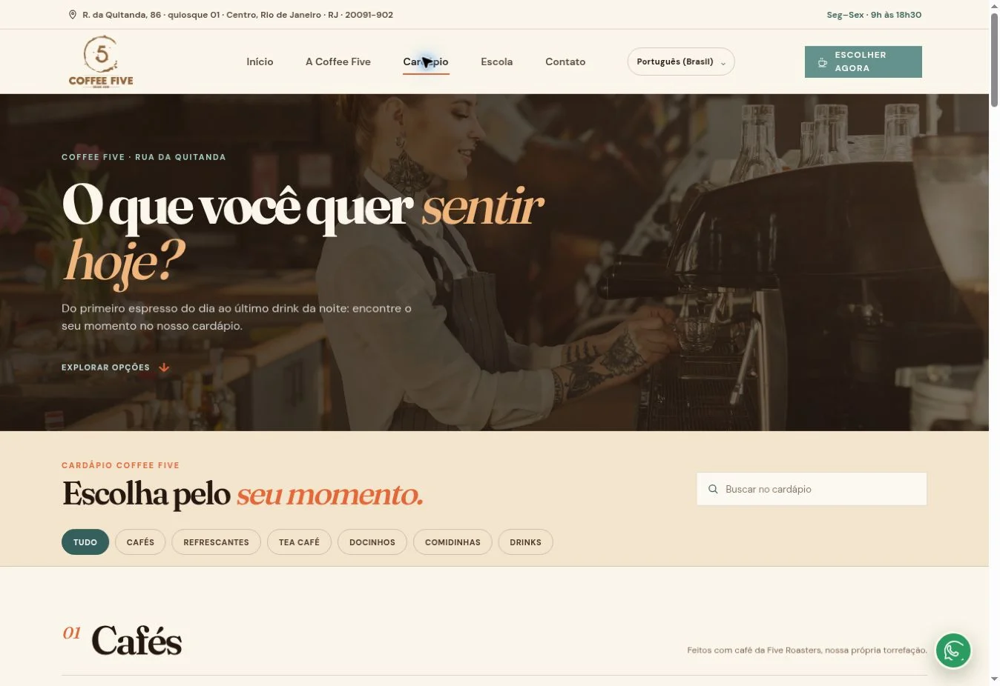

Web / Coffee Five
Do primeiro contato à escolha no cardápio.
Proposta de experiência institucional para cafeteria, com cardápio pesquisável.
O problema
O que precisa mudar?
Um catálogo extenso precisa manter navegação clara e acesso fácil às informações de cada produto, especialmente no celular.
A solução
O que foi construído.
Um site estático com página institucional e rota própria de cardápio, incluindo categorias, filtros e busca.

Como funciona.
Conhecer
A página institucional apresenta a cafeteria e suas frentes.
Encontrar
O visitante pesquisa ou filtra os itens do cardápio.
Escolher
Informações de produtos e links orientam a próxima ação.
Capacidades do projeto.
- Página institucional
- Cardápio em rota própria
- Busca e filtros de produtos
- Layout para desktop e celular
- Imagens e identidade da proposta
- Publicação estática
A engenharia por trás.
Duas rotas estáticas com JavaScript local e conteúdo renderizado em HTML. Não há banco, checkout ou autenticação nesta proposta.
HTML · CSS · JavaScript
O estágio atual. O próximo passo.
Proposta de redesign baseada em informações públicas da Coffee Five. A presença no portfólio não afirma contratação, parceria ou aprovação comercial da marca.
Possibilidades de evolução
Conectar catálogo administrável, atualizar conteúdo com a operação e integrar pedidos se houver necessidade validada.
Fontes consultadas: README.md · index.html · cardapio/index.html · assets/app.js.
Próximo projeto
Pata & CompanhiaVamos conversar
Seu próximo passo
começa com uma ideia.
Conte o que você precisa. O escopo a gente constrói junto.